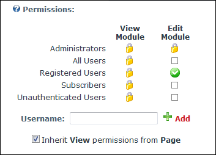

How to enable bloggers to access blog management tools (Edit Blog Settings, Add Blog Entry and Mass Edit Blog Posts) using the View_Blog module. Note: Bloggers must be viewing their own blog to access these tools.
Tip: Bloggers can also access these tools using the New_Blog module.

Setting Blog permissions in DNN Platform